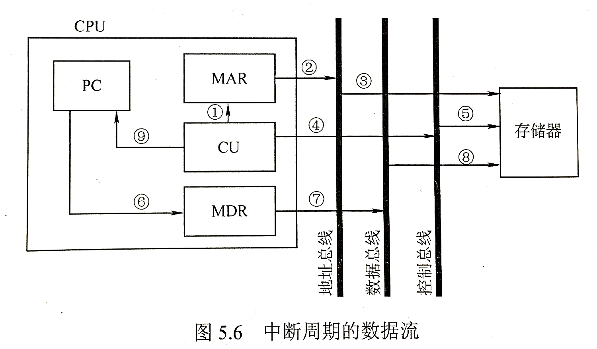

中央处理器¶
CPU的功能和基本结构¶
CPU的功能¶
- 控制器：负责协调并控制计算机各部件执行程序的指令序列，包括取指令、分析指令和执行指令
-
运算器：对数据进行加工
-
CPU的具体功能
- 指令控制：完成取指令、分析指令和执行指令的操作，即程序的顺序控制
- 操作控制：一条指令的功能往往由若干操作信息的组合来实现。CPU管理并产生由内存取出的每条指令的操作信号，把各种操作信号送往相应的部件，从而控制这些部件按指令的要求进行动作
- 时间控制：对各种操作加以时间上的控制。时间控制要为每条指令按时间顺序提供应有的控制信号
- 数据加工：对数据进行算术和逻辑运算
- 中断处理：对计算机运行过程中出现的异常情况和特殊请求进行处理
CPU的基本结构¶
运算器¶
运算器接收从控制器送来的命令并执行相应的动作，对数据进行加工和处理。运算器是计算机对数据进行加工处理的中心。
| 结构 | 简称 | 功能 |
|---|---|---|
| 算术逻辑单元 | ALU |
主要功能是进行算术/逻辑运算 |
| 暂存寄存器 | 用于暂存从主存读来的数据，该数据不能存放在通用寄存器中，否则会破坏其原有内容。暂存寄存器对应用程序员是透明的 | |
| 累加寄存器 | ACC |
属于通用寄存器，用于暂时存放ALU运算的结果信息，可以作为加法运算的一个输入端 |
| 通用寄存器组 | AX,BX,CX,DX,SP等，用于存放操作数和各种地址信息等。SP是堆栈指针，用于指示栈顶的地址 |
|
| 程序状态字寄存器 | PSW |
保留由算术逻辑运算指令或测试指令的结果而建立的各种状态信息，如溢出标志OF，符号标志SF，零标志ZF，进位标志CF等 |
| 移位器 | 对操作数或运算结果进行移位运算 | |
| 计数器 | CT |
控制乘除运算的操作步数 |
控制器¶
控制器的基本功能是执行指令，每条指令的执行是由控制器发出的一组微操作实现的。控制器有硬布线控制器和微程序控制器两种类型。
控制器的工作原理是，根据指令操作码、指令的执行步骤和条件信号来形成当前计算机各部件要用到的各种控制信号。计算机整机个硬件系统在这些控制信号的控制下协同运行，产生预期的执行效果
| 结构 | 简称 | 功能 |
|---|---|---|
| 程序计数器 | PC |
用于指出下一条指令在主存中的存放地址。CPU根据PC的内容取主存中取指令。因程序中指令是顺序执行的，所以PC有自增功能 |
| 指令寄存器 | IR |
用于保存当前正在执行的那条指令 |
| 指令译码器 | 仅对操作码字段进行译码，向控制器提供特定的操作信号 | |
| 存储器地址寄存器 | MAR |
用于存放要访问的主存单元的地址 |
| 存储器数据寄存器 | MDR |
用于存放向主存写入的信息或从主存读出的信息 |
| 时序系统 | 用语产生各种时序信号，他们都有统一时钟CLOCK分频得到 |
|
| 微操作信号发生器 | 根据IR的内容、PSW的内容及时序信号，产生控制整个计算机系统所需的各种控制信号，其结构有组合逻辑型和存储逻辑型两种 |
指令执行过程¶
指令周期¶
指令周期包含若干机器周期，一个机器周期又包含若干时钟周期。有定长的机器周期，也有不定长的机器周期。
- 取指周期：从主存中取出指令代码并存放在IR中
- 间址周期：取操作数有效地址
- 执行周期：根据IR中的指令字的操作码和操作数通过ALU操作产生执行结果。
- 中断周期：处理中断请求。
指令周期的数据流¶
取值周期¶
PC中存放的是地址，根据此地址从内存单元中取出的是指令，并存放在指令寄存器IR中
PC①MAR②地址总线③主存CU发出控制信号④控制总线⑤主存- 主存⑥数据总线⑦
MDR⑧IR(存放指令) CU发出读命令⑨PC内容加1
间址周期¶
Ad(IR)①MDR②地址总线③主存CU发出读命令④控制总线⑤主存- 主存⑥数据总线⑦
MDR(存放有效地址)
执行周期(略)¶
中断周期¶

假设程序断点存入堆栈中，并用SP指示栈顶指针，而且进栈操作是先修改栈顶指针，后存入数据
CU控制将SP减1，SP①MAR②地址总线③主存CU发出写命令④控制总线⑤主存-
PC⑥MDR⑦数据总线⑧主存(程序断点存入主存) -
CU(中断服务程序的入口地址)⑨PC
指令执行方案¶
- 单指令周期：对所有指令都选用相同的执行时间来完成。指令之间串行执行。指令周期取决于执行时间最长的指令的执行时间
- 多指令周期：对不同类型的指令选用不同的执行步骤来执行。指令之间串行执行。
- 流水线方案：指令之间可以并行执行的方案，称为流水线方案，其追求的目标是力争在每个时钟脉冲周期完成一条指令的执行过程。通过在每个时钟周期启动一条指令，尽量让多条指令同时运行，但各自处在不同的执行步骤中。
数据通路的功能和基本结构¶
数据通路的功能¶
- 数据通路：数据在功能部件之间传送的路径。数据通路描述了信息从什么地方开始，中间经过哪个寄存器或多路开关，最后传送到哪个寄存器。数据通路的功能是实现
CPU内部的运算器与寄存器及寄存器之间的数据交换。 - 数据通路部件：数据通路上的部件。
- 执行部件/功能部件：数据通路中专门进行数据运算的部件。
- 控制部件：控制部件更具每条指令功能的不同生成对数据通路的控制信号，并正确控制指令的执行流程。
数据通路的基本结构¶
CPU内部单总线方式：将所有寄存器的输入端和输出端都连接到一条公共通路上，效率低CPU内部三总线方式：将所有寄存器的输入端和输出端都连接到多条公共通路上，同时在多个总线上传送不同数据，效率高- 专用数据通路方式：根据指令执行过程中的数据和地址的流动方向安排连接线路，避免使用共享的总线，性能较高，但硬件量较大。
- 寄存器之间的数据传送
寄存器之间的数据传送可通过CPU内部总线完成。现以PC寄存器为例，把PC内容送到MAR。
1 2 3 | |
- 主存与
CPU之间的数据传送
主存与CPU之间的数据传送也要借助CPU内部总线完成。现以CPU从主存读取指令为例
1 2 3 4 5 | |
- 执行算术或逻辑运算
执行算术或逻辑操作时，由于ALU本身是没有内部存储功能的组合电路，因此如要执行加法运算，相加的两个数必须在ALU的两个输入端同时有效。暂存器Y即用于该目的。先将一个操作数经CPU内部总线送入暂存器Y保存，Y的内容在ALU的左输入端始终有效，再将另一个操作数经总线直接送到ALU的右输入端。这样两个操作数都送入了ALU，运算结果暂存在暂存器Z中
1 2 3 4 5 6 | |
控制器的功能和工作原理¶
控制器的功能和结构¶
- 运算器部件通过数据总线与内存储器、输入输出设备传送数据
- 输入设备和输出设备通过接口电路与总线相连
- 内存储器、输入设备和输出设备从地址总线接收地址信息，从控制总线得到控制信号，通过数据总线与其他部件传送数据
- 控制器部件从数据总线接收指令信息，从运算器部件接收指令转移地址，送出指令地址到地址总线，还要向系统中的部件提供他们运行所需要的控制信号
控制器的主要功能¶
- 从主存中取出一条指令，并指出下一条指令在主存中的位置
- 对指令进行译码或测试，产生相应的操作控制信号，以便启动规定的动作
- 指挥并控制CPU、主存、输入和输出设备之间的数据流动方向
根据控制器产生微操作控制信号的方式的不同，控制器可分为硬布线控制器和微程序控制器
硬布线控制器¶
硬布线控制器的基本原理是根据指令的要求、当前的时序及外部和内部的状态，按时间的顺序发送一系列微操作控制信号。它由复杂的组合逻辑门电路和一些触发器构成，因此又称组合逻辑控制器
硬布线控制单元图¶
CU的输入信号的来源
- 经指令译码器译码产生的指令信息
- 时序系统产生的机器周期信号和节拍信号
- 来自执行单元的反馈信号即标志
硬布线控制器的时序系统及微操作¶
- 时钟周期：用时钟信号控制节拍发生器，可以产生节拍，每个节拍的宽度正好对应一个时钟周期。在每个节拍内机器可完成一个或几个需同时执行的操作
-
机器周期：机器周期可视为所有指令执行过程中的一个基准时间。不同指令的操作不同，指令周期也不同。访问一次存储器的时间是固定的，因此通常以存取周期作为基准时间，即内存中读取一个指令字的最短时间作为机器周期。在存储字长等于指令字长的前提下，取值周期也可视为机器周期
-
指令周期
- 微操作命令分析：控制单元具有发出各种操作命令序列的功能。这些命令与指令有关，而且必须按一定次序发出。
取指周期的微操作命令¶
1 2 3 4 5 6 | |
间址周期的微操作命令¶
1 2 3 | |
执行周期的微操作命令¶
- 非访存指令
1 2 3 4 5 | |
- 访存指令
1 2 3 4 5 6 7 8 9 10 11 12 | |
- 转移指令
1 2 | |
CPU的控制方式¶
- 同步控制方式：系统有一个统一的时钟，所有的控制信号均来自这个统一的时钟信号。通常以最长的微操作序列和最烦琐的微操作作为标准，采取完全统一的，具有相同时间间隔和相同数目的节拍作为机器周期来运行不同的指令
- 异步控制方式：不存在基准时标信号，各部件按自身固有的速度工作，通过应答方式进行联络
- 联合控制方式：介于同步、异步之间。对不同的指令的微操作实行大部分同步，小部分异步
硬布线控制单元设计步骤¶
（具体内容略）
- 列出微操作命令的操作时间表
- 进行微操作信号综合
- 画出微操作命令的逻辑图
微程序控制器¶
微操作控制器采用存储逻辑实现，把微操作信号代码化，使每条机器指令转化称为一段微操作并存入一个专门的存储器中，微操作控制信号由微指令产生
微程序控制的基本概念¶
-
微命令与微操作：
- 一条机器指令可以分解成一个微操作序列。
- 将控制部件向执行部件发出的各种控制命令称为微命令，它是构成控制序列的最小单位。
- 微命令和微操作是一一对应的。微命令是微操作的控制信号，微操作是微命令的执行过程。微命令有相容性和互斥性之分。
-
微指令与微周期：
- 微指令是若干微命令的集合
-
存放微指令的控制存储器的单元地址称为微地址
-
一条微指令包含两个信息
- 操作控制字段：微操作码字段，用于产生某一步操作所需的各种操作控制信号
- 顺序控制字段：微地址码字段，用于控制产生下一条要执行的微指令地址
- 微周期指从控制存储器中读取一条微指令并执行相应的微操作所需要的时间
-
主存储器与控制存储器
- 主存储器用于存放程序和数据，在CPU外部，用RAM实现
- 控制存储器(CM)用于存放微程序，在CPU内部，用ROM实现
-
程序与微程序：
- 程序是指令的有序集合，用于完成特定的功能
- 微程序是微指令饿的有序集合，一条指令的功能由一段微程序来实现
-
四个寄存器
- 地址寄存器
MAR：用于存放主存的读写地址 - 位地址寄存器
CMAR：用于存放控制存储器的读写微指令的地址 - 指令寄存器
IR：用于存放从主存中读出的指令 - 微指令寄存器
CMDR：用于存放从控制存储器中读出的微指令
- 地址寄存器
微程序控制器组成和工作过程¶
微程序控制器的基本组成¶
- 控制存储器：微程序控制器的核心部件，用于存放各指令对应的微程序，
ROM组成 - 微指令寄存器：用于存放从
CM中取出的微指令，它的位数同微指令字长相等 - 微地址形成部件：用于产生初始微地址和后继微地址，以保证微指令的连续执行
- 微地址寄存器：接收微地址形成部件送来的微地址，为在
CM中读取微指令作准备
微程序控制器的工作过程¶
- 执行取微指令公共操作。在机器开始运行时，自动将取值微程序的入口地址送入
CMAR，并从CM中读出相应的微程序送入CMDR。取值微程序的入口地址一般为CM的0号单元，当取值微程序执行完成后，从主存中取出的机器指令就已存入指令寄存器中 -
由机器指令的操作码字段通过微地址形成部件产生该机器指令所对应的微程序的入口地址，并送入
CMAR -
从
CM中逐条取出对应的微指令并执行 -
执行完对应于一条机器指令的一个微程序后，又回到取指微程序的入口地址，继续第
1步
微指令的编码方式¶
又称微指令的控制方式，是指如何对微指令的控制字段进行编码，以形成控制信号。编码的目标是在保证速度的情况下，尽量缩短微指令字长
-
直接编码方式
- 定义：微指令的微命令字段中每位都代表一个微命令。每个1微命令1对应并控制数据通路中的一个微操作。无须进行译码。
- 特点：执行速度快，操作并行信号，微指令字长过大，
n个微命令要求微指令的操作码字段有n位。
-
字段直接编码方式
- 定义：将微指令的微命令字段分为若干小字段，把互斥性微命令组合在同一字段中，把相容性微命令组合在不同字段中，每个字段独立编码，每种编码代表一个微命令且各字段编码含义单独定义，与其他字段无关。
- 原则
- 互斥性微命令分在同一段内，相容性微命令分在不同段中
- 每个小段中包含的信息位不能太多，否则将增加译码线路的复杂性和译码时间
- 一般每小段还要留出一个状态，表示本字段不发出任何微命令
-
字段间接编码方式
一个字段的某些微命令需由另一个字段中的某些微命令来解释。削弱了微指令的并行控制能力，是字段直接编码方式的一种辅助手段
微指令的地址形成方式¶
- 直接由微指令的下地址字段指出：微指令格式中设置一个下地址字段，由微指令的下地址字段直接指出后继微指令的地址，这种方式又称断定方式
-
根据机器指令的操作码形成：机器指令取值指令寄存器后，微指令的地址由操作码经地址形成部件形成
-
更多方式
- 增量计数器法
- 根据个最终标志决定微指令分支转移的地址
- 通过网络测试形成
- 由硬件直接产生微程序入口地址
- 电源加电后，第一条微指令的地址可由专门的硬件电路产生，也可由外部直接向
CMAR输入微指令的地址，这个地址即为取值周期微程序的入口地址
微指令的格式¶
- 水平型微指令
从编码方式看，直接编码，字段直接编码，字段间直接编码和混合编码都属于水平型微指令。指令字中的一位对应一个控制信号，一条水平型微指令定义并执行几种并行的基本操作
| \(A_1\)~\(A_n\) | 判断测试字段 | 后继地址字段 |
|---|---|---|
| 操作控制 | 顺序控制1 | 顺序控制2 |
- 垂直型微指令
在微指令中设置微操作码字段，采用微操作码变异吗，有微操作码规定微指令的功能，一条垂直微指令只能定义并执行一种基本操作
uOP |
Rd |
Rs |
|---|---|---|
| 微操作码 | 目的地址 | 源地址 |
-
混合型微指令：在垂直型的基础上增加一些不太复杂的并行操作。微指令较短，仍便于编写；微程序也不长，执行速度加快
-
水平型微指令\(VS\)垂直型微指令
- 水平型微指令并行操作能力强、效率高、灵活性强；垂直型微指令则较差
- 水平型微指令执行一条指令的时间段；垂直型微指令执行的时间长
- 由水平型微指令解释指令的微程序，具有微指令字较长但微程序短的特点；垂直型微指令则与之相反
- 水平型微指令用户难以掌握；垂直型微指令与指令比较相似，相对容易掌握
微程序控制单元的设计步骤¶
- 写出对应机器指令的微操作命令及节拍安排
| 节拍 | 取指操作 |
|---|---|
| \(T_0\) | PC->MAR,1->R |
| \(T_1\) | Ad(CMDR)->CMAR |
| \(T_2\) | M(MAR)->MDR,(PC)+1->PC |
| \(T_3\) | Ad(CMDR)->CMAR |
| \(T_4\) | MDR->IR |
| \(T_5\) | OP(IR)->微地址形成部件->CMAR |
微指令和机器指令相联系，每执行完一条微指令后要得到下一条微指令的地址，故机器指令完成后需要Ad(CMDR)->CMAR
- 确定微指令格式
包括微指令的编码方式、后继微指令地址的形成方式和微指令字长等
根据微操作个数决定采用何种编码方式，以确定微指令的操作控制字段的位数。由微指令数确定微指令的顺序控制字段的位数。
- 编写微指令码点：根据操作控制字段每位代表的微操作命令，编写每条微指令的码点
动态微程序设计和毫微程序设计¶
- 动态微程序设计：能根据用户的要求改变微程序，需要可写控制寄存器的支持
- 毫微程序设计：硬件不由微程序直接控制，而是通过存放在第二级控制存储器中的毫微程序来解释的，这个第二级控制存储器就称为毫微存储器，直接控制硬件的是毫微微指令
硬布线和微程序控制器的特点¶
| 项目 | 微程序控制器 | 硬布线控制器 |
|---|---|---|
| 工作原理 | 微操作控制信号以微程序的形式存放在控制存储器中，执行指令时读出即可 | 微操作控制信号可由组合逻辑电路根据当前的指令码、、状态和时序，即时产生 |
| 执行速度 | 慢 | 快 |
| 规整性 | 较规整 | 烦琐、不规整 |
| 应用场合 | CISC CPU |
RISC CPU |
| 易扩充性 | 易扩充修改 | 困难 |
指令流水线¶
指令流水线的基本概念¶
指令流水的定义¶
根据计算机不同，具体分法不同。一条指令的执行过程可分为如下阶段
- 取值：根据PC内容访问主存储器，取出一条指令送到
IR中 - 分析：对指令操作码进行译码，按照给定的寻址方式和地址字段中的内容形成操作数饿的有效地址EA，并从有效地址EA中取出操作数
- 执行：根据操作码字段，完成指令规定的功能，即把运算结果写到通用寄存器或主存中
当多条指令在处理器中执行时，可采用下面两种方式
-
顺序执行方式：\(T=3nt\)
-
流水线执行方式
\(T=(2+n)t\)
每个时钟周期都有一条指令进入流水线，处理机中同时有3条指令在执行，每个时钟周期都有一条指令完成，每条指令的时钟周期数都为1
流水线设计的原则
指令流水线个数以最复杂指令所用的功能个数为准，流水段的长度以最复杂的操作所花时间为准。
为了利于实现指令流水线，指令集应具有如下特征
- 指令长度尽量一直，有利于简化取指令和指令译码操作
- 指令格式应尽量规整，尽量保证源寄存器的位置相同，有利于指令未知时就可取寄存器操作数
- 采用
Load/Store指令，其他指令都不能访问存储器，有利于减少操作步骤 - 数据和指令在存储器中对齐存放
流水线的表示方法¶
时空图
流水线方式的特点¶
- 把一个任务(一条指令或一个操作)分解为几个有联系的子任务，每个子任务由一个专门的功能部件来执行，并依靠多个功能部件并行工作来缩短程序的执行时间。
- 流水线每个功能段部件后面都要有一个缓冲寄存器， 或称锁存器，其作用是保存本流水段的执行结果，供给下一流水段使用。
-
流水线中各功能段的时间应尽量相等，否则将引起堵塞、断流。
-
只有连续不断地提供同一种任务时才能发挥流水线的效率，所以在流水线中处理的必须是连续任务。在采用流水线方式工作的处理机中，要在软件和硬件设计等多方面尽量为流水线提供连续的任务。
- 流水线需要有装入时间和排空时间。装入时间是指第一个任务进入流水线到输出流水线的时间。排空时间是指最后一一个任 务进入流水线到输出流水线的时间。
流水线的分类¶
| 部件功能级流水线 | 将复杂的算术逻辑运算组成流水线工作方式 |
| 处理机级流水线 | 把一条指令解释过程分为多个子过程 |
| 处理机间流水 | 每个处理机完成某一专门任务，各个处理机得到的结果需存放在与下一个处理机共享的存储器中 |
| 单功能流水线 | 指只能实现一种固定的专门功能的流水线 |
| 多功能流水线 | 指通过各段时间的不同连接方式可以同时或不同时地实现多种功能的流水线 |
| 动态流水线 | 在同一时间内，当某些段正在实现某种运算时，另一些段缺正在进行另一种运算。这样对提高 |
| 静态流水线 | 在同一时间内，流水线的各段只能按同一种功能的连接方式工作 |
| 线性流水线 | 从输入到输出，每个功能段只允许经过一次，不存在反馈回路。 |
| 非线性流水线 | 存在反馈回路，从输入到输出的过程中，某些功能段将数次通过流水线，这种流水线适合进行线性递归的计算 |
影响流水线的因素¶
| 冲突 | 含义 | 解决措施 |
|---|---|---|
| 资源冲突（结构冒险） | 由于多条指令在同一时刻争用同一资源而形成的冲突 | 暂停周期、单独设置数据存储器和指令存储器 |
| 数据冲突（数据冒险） | 下条指令会用到当前指令计算出的结果 | 硬件阻塞和软件插入"NOP"指令、数据旁路技术、通过编译器对数据相关的1指令编译优化的方法，调整指令顺序来解决数据相关 |
| 控制冲突（控制冒险） | 一条指令要确定下一条指令的位置 | 分支预测、预取转移成功和不成功指令、加快和提前形成条件码、提高转移方向的猜准率 |
流水线的性能指标¶
- 流水线的吞吐量
单位时间内流水线所完成的任务数量
\(TP=\frac{n}{T_k}=\frac{n}{(k+n-1)\Delta}\)
- 流水线的加速比
不适用流水线所用的时间与使用流水线所用的时间之比
\(S=\frac{T_0}{T_k}=\frac{kn}{k+n-1}\)
- 流水线的效率
流水线的设备利用率。在时空涂上，流水线的效率定义为完成n个任务占用的时空区有效面积，与n个任务所用的时间及k个流水段所围成的时空区总面积之比
\(E=\frac{T_0}{kT_k}\)
超标量流水线¶
- 超标量流水线技术
每个时钟周期内可并发多条独立指令，即以并行操作方式将两条或多条指令编译并执行
- 超流水线技术
在一个时钟周期内再分段，在一个时钟周期内一个功能部件使用多次
- 超长指令字
由编译程序挖掘出指令间潜在的并行性，将多条能并行操作的指令组合成一条具有多个操作码字段的超长指令字
本页面最近更新：，更新历史
发现错误？想一起完善？ 联系我
本页面贡献者：Jacy
本页面的全部内容在 CC BY-SA 4.0 和 SATA 协议之条款下提供，附加条款亦可能应用